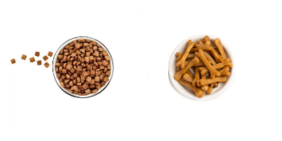
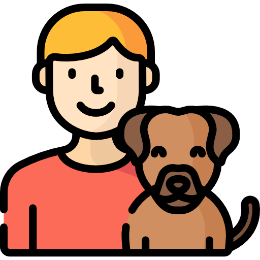
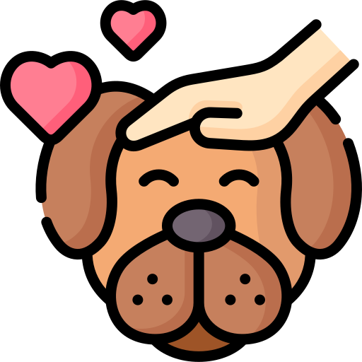

Categorias

Alimentos

Accesorios y Medicamentos

Belleza
Productos

Cuidado Animal
Alimenta a tu mascota con una dieta adecuada. La alimentación es uno de los factores más importantes para la salud de las mascotas. Elige un alimento que esté formulado para la edad, el tamaño y el nivel de actividad de tu mascota.

Adoptame
La adopción de una mascota es una gran responsabilidad, pero también puede ser una experiencia muy gratificante. Al adoptar una mascota, estás dando un hogar a un animal que lo necesita y estás haciendo una diferencia en el mundo.

Amor Animal
Las mascotas son una parte importante de nuestras vidas, y merecen un cuidado adecuado para que puedan vivir felices y saludables. Lleva a tu mascota al veterinario para cuidados y amor.